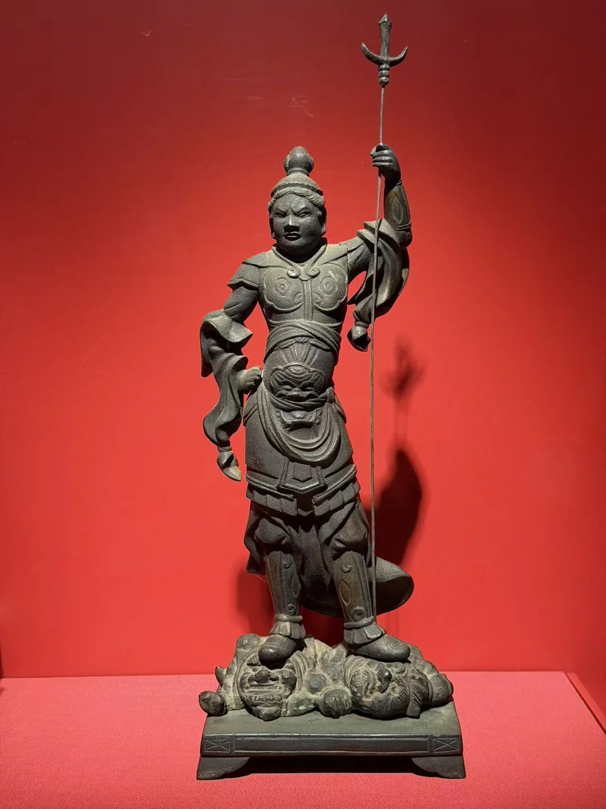
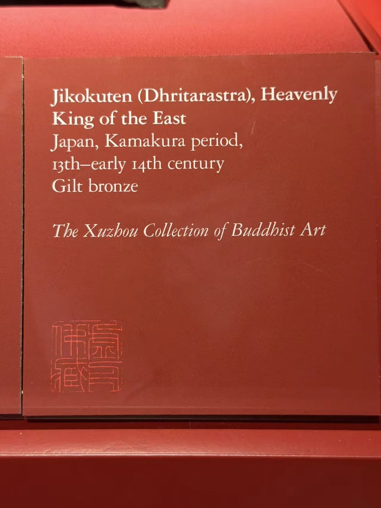

THE XUZHOU COLLECTION
东方持国天王
Jikokuten (Dhritarastra), Heavenly King of the East
甲胄、兵器与脚下的承托形象。

- 地区
- 日本
- 年代
- 镰仓时期，13世纪—14世纪初
- 材料
- 鎏金青铜
- 收藏
- 虚舟收藏（私人收藏）
- 观看地点
- 休斯顿美术馆（MFAH）
作品札记
这尊立像的动作由抬起的手臂和长兵器拉开，另一只手收在腰侧。甲片、袖口与腰腹层叠的衣饰使身体显得厚重，脚下伏着的形象又让站姿多了一层力量关系。
展签明确题为东方持国天王，即日语Jikokuten、梵名Dhritarastra，属于守护四方的天王之一。馆方将这件日本鎏金青铜像定为13世纪至14世纪初。与同柜坐在莲花上的如意轮观音相比，护法的武装外观和姿态尤为鲜明。
现场展签与原始记录

- 题名
- Jikokuten (Dhritarastra), Heavenly King of the East
- 地区
- Japan
- 年代
- Kamakura period, 13th–early 14th century
- 材料
- Gilt bronze